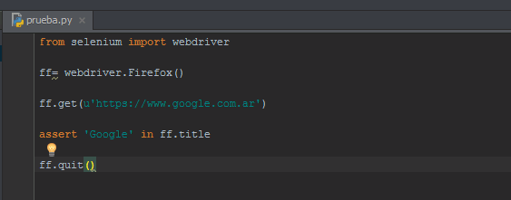

Las pruebas son de mucha importancia, son las que definen el flujo de proyectos y grandes equipos de trabajo.
Dentro de las practicas de buen desarrollador se encuentra las pruebas de los diferentes desarrollos que realicen, lo que los diferencia es la forma en la que realizan dichas pruebas.
Por eso es tan importante la implementación de pruebas ya que ayudan a verificar errores y dificultades del desarrollo rápidamente, para poder solucionarlos en la brevedad.
Entonces, ¿Porque Automatizar?
La principal razón es el tiempo y con las pruebas automatizadas se puede reducir el tiempo de las pruebas. Además al automatizar las actividades comunes que no requieren de inteligencia humana, los testers pueden dedicar mayor tiempo a pruebas más críticas y caminos más elaborados dejando los caminos básicos a las pruebas automatizadas.
Rapidez: Las herramientas de testing automatizado corren las pruebas significativamente más rápido que los testers humanos.
Fiabilidad: Las pruebas ejecutan precisamente las mismas operaciones cada vez que se ejecutan, eliminando el error humano.
Repetición: Se puede testear como reacciona el soft bajo repetidas ejecuciones de las mismas operaciones.
Programable: Se pueden programar pruebas sofisticadas y complejas que muestren información oculta de la aplicación.
Reusabilidad: Se pueden rehusar los scripts con pruebas automatizadas
Instalación
Para comenzar primero deberemos instalar Python en nuestro S.O, para ello ingresamos en la pagina de
Python
Una vez descargado el archivo de instalación podremos ejecutarlo, para instalarlo. Lo mas importante es
habilitar la opcion Path para evitar luego tener que realizar este paso.
Al finalizar la instalación nos dirigimos a consola y escribimos : "python --version" Nos deberá devolver
la versión de python que acabamos de instalar(Esto es una forma de verificar que python se instalo de forma correcta.)
Otra comprobación que podemos hacer es dirigirnos a las variables de entorno: Equipo->propiedades->configuracion avanzada de Sistema->Variables de Entorno->Path(Y observar si se encuentra la ruta de acceso a Python)
Instalación Selenium Webdriver
Nos dirigimos a consola, en la ubicacion donde tenemos instalado Python
y escribimos:
pip install -U selenium.
Mediante este sencillo paso ya tendremos instalado Selenium.
Para verificar que todo fue correcto en la misma consola escribimos:
>>python
Para poder correr selenium.
Ahora en python:
from selenium import webdriver (damos enter)
ff=webdriver.Firefox().
Deberia abrir automaticamente una ventana de Firefox. (Lo que nos indica que selenium funciona correctamente.)
Como Podemos observar a la hora de declarar el webdriver, "Firefox()" debe ir con Mayúsculas. Si no, no reconocera la orden.
Instalación PyCharm
El IDE a utilizar sera PyCharm
Descargamos entonces PyCharm dependiendo nuestro S.O
su isntalacion es muy simple y no tendremos complicaciones.
Si todo salio bien podremos iniciar el programa y visualizar la siguiente ventana:
Para iniciar una nueva prueba, de igual manera que en la imagen , vamos a nuevo -> Archivo Python
De esta manera ya estamos listos para programar nuestra prueba.
Primera Prueba Automatizada

En la imagen podemos observar una prueba sencilla.
Donde lo que hacemos es dirigirnos a la pagina de google y verificar mediante "assert" que el titulo sea "Google"
para iniciar la prueba vamos a Run -> 'Run prueba' (Mayús+f10) Si todo sale bien la prueba terminara satisfactoriamente